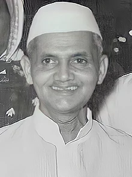

Lal Bahadur Shastri
9 June 1964 – 11 January 1966
Man of Peace, Nanhe
Lal Bahadur Shastri: 2 October 1904 – 11 January 1966) was an Indian politician and statesman who served as the 2nd Prime Minister of India from 1964 to 1966 and 6th Home Minister of India from 1961 to 1963. He promoted the White Revolution – a national campaign to increase the production and supply of milk – by supporting the Amul milk co-operative of Anand, Gujarat and creating the National Dairy Development Board. Underlining the need to boost India's food production, Shastri also promoted the Green Revolution in India in 1965. This led to an increase in food grain production, especially in the states of Punjab, Haryana and Uttar Pradesh.
Biographies
- Early years (1904–1920)
- Gandhi's disciple (1921–1945)
- Independence Activism of Lal Bahadur Shastri
- Political Career (1947–1964)
- State minister
- Cabinet minister
- Prime minister (1964–1966)
- Domestic policies
- Economic policies
- Jai Jawan Jai Kisan
- Foreign policies
- War with Pakistan
- Family and personal life
- Death
- Legacy
- Memorials
- Shastri Circle Jodhpur
- Lal Bahadur Shastri National Academy of Administration, Mussoorie
- Lal Bahadur Shastri Memorial, New Delhi
- In popular culture
- Homage to Lal Bahadur Shastri is a 1967 short documentary film (1967) & Apne Shastri Ji (1986)
- Jai Jawaan Jai Kisaan Jai Jawaan Jai Kisaan is a 2015 Indian Hindi-language biographical drama film
- The Tashkent Files (2019)
- Pradhanmantri2013
- Memorials
Read more about Lal Bahadur Shastri on Wikipedia.